Step 4: Testing By Simulation
Contents
- Introduction
- Verification and Validation Tools Used
- Simulink Test Overview
- Generating a Test Harness Model
- Importing Test Vectors
- Completing the Test Harness Model
- Executing the Functional Tests and Analyzing the Results
- Using SDI for Results Verification
- Online Assessment with Model Verification Blocks
- Test Sequence Blocks for Inputs and Online Assessment
- Simulink Test Manager Overview
- Importing a Test Harness into the Test Manager
- Using a Baseline for Test Case Asssessment
- Introduction to the Model Coverage Concept
- Collecting Model Coverage From Functional Test Cases
- Using the Model Coverage Results
- Summary
Introduction
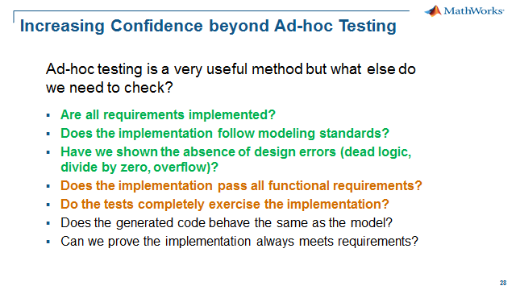
The most common verification method is to actually execute the algorithm or program, i.e. so called dynamic testing. In Simulink this is done using simulation by simply pressning PLAY, or what we covered in the first step of the workshop, Ad-hoc Testing. This step takes a more formalized, structured approach to dynamic testing, goes beyond ad-hoc testing to answer the next questions:
- Does the implementation pass all functional requirements?
- Do the tests completely exercise the implementation?
Dynamic testing involves creating a set of test vectors based on the functional requirements, and ensuring that the algorithm output meets the expected output. However, determining that the algorithm behaves as expected is only part of the overall test objectives. Another vital part is to get information about how much of the algorithm has been covered by the test cases. In Simulink, you can do this by enabling model coverage measurements during simulation. Model coverage is able to tell us whether or not we have achieved a "minimal" amount of testing. For example, if we have not reached 100% decision coverage, we have not exercised or tested 100% of our model.
In this section, we will see how we can quickly build up a test environment by creating a test harness model, capturing model coverage information and verify that our test results meet our expected outputs. We will use the test harness to debug the model when we fail the functional testing. Model coverage results will also help the debugging effort but more fundamentally it will provide an additional check that the implementation matches the requirements beyond the previous traceability discussion.
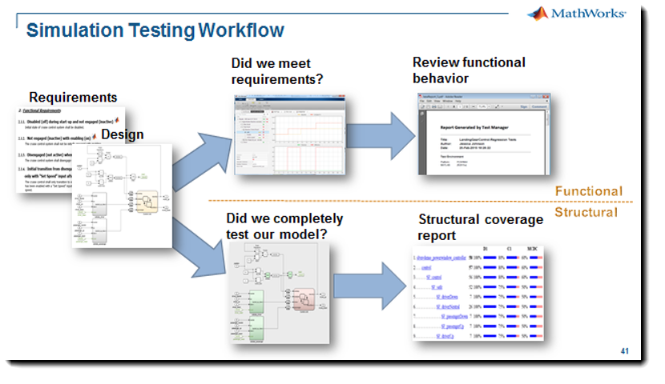
Verification and Validation Tools Used
- Simulation Data Inspector (part of Simulink)
- Simulink Verification and Validation
- Simulink Test
Simulink Test Overview
In this step we will use the features of Simulink Test to perform the dynamic testing of our cruise controller. Simulink Test supports interactive testing of the model with creation and management of test harnesses. To create input vectors for use in the harness we will mostly use Signal Builder and a brief example of using a test sequence block from Simulink Test. For evaluation we will introduce the use of a another instance of a test sequence block. And lastly we will use the test manager of Simulink Test to automate the execution, evaluation and reporting of our results.
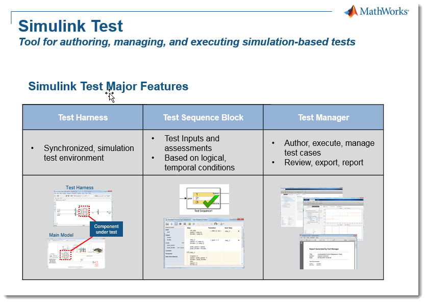
Generating a Test Harness Model
Simulink Verification and Validation contains several functions that help the user create test harness models to facilitate the dynamic functional testing. The test harness provides an environment to:
- Import test cases
- Link to requirements
- Execute the tests
- Evaluate the results
- Debug the failed tests
- Measure test completeness
In the past, to create the test harness we would have used the slvnvmakeharness function provided in the Simulink Verification and Validation toolbox. An identical function sldvmakeharness is provided with the Simulink Design Verifier toolbox. But we will use the new test harness creation feature provided by Simulink Test.
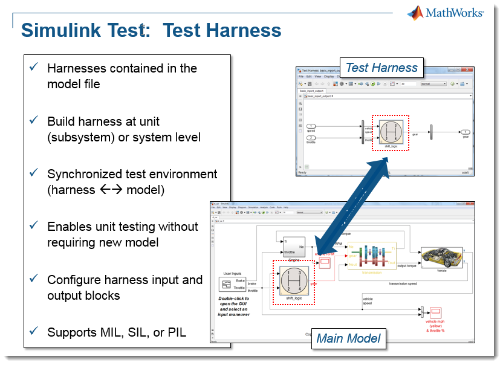
To generate the test harness model, do the following:
1. Open CruiseControl.slx - click here.
Examine the state chart to see the Cruise Control logic includes the bug fixes from our previous work:
- Exit condition fix based on work done in Step 0: Ad-hoc Testing
- Calculation order and calibration lower limit fix based on work done in Step 3: Detecting Design Errors
2. To begin the creation of the test harness, select Analysis, Test Harness, Create Test Harness (Cruise Control) .... If the menu selection for Create Test Harness (ComputeTargetSpeed)... appears, you need to de-select the ComputeTargetSpeed subsystem, otherwise you will be creating a harness for the subsystem instead of the model.
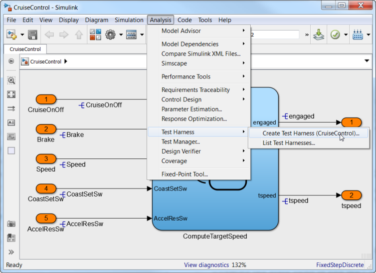
3. In the "Create Test Harness" user interface, enter the name "CruiseControl_Harness_Short".
4. Select "Signal Builder" as the source block. Select "OK" when completed.
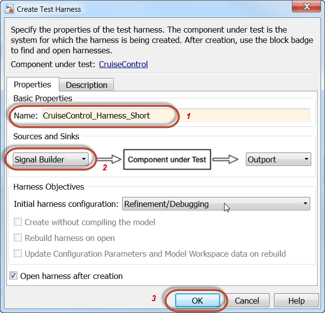
The harness model consists of 4 components:
- Signal Builder block
- Input Conversion Subsystem which contains datatype and rate transition blocks. Buses and Vectors are also handled within this subsystem
- Cruise Control (unit under test as a model reference)
- Output Conversion Subsystem which contains datatype and rate transition blocks. Buses and Vectors are also handled within this subsystem
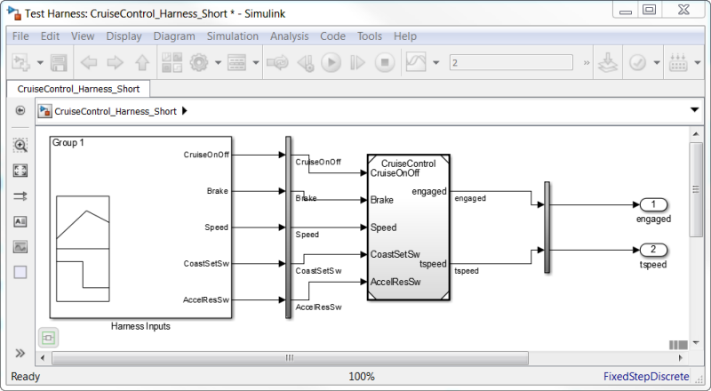
The harness model is automatically configured to measure and report model coverage. Since this will be handled in detail in an upcoming section, we will disable model coverage for now.
To disable model coverage temporarily, run the following command - disableModelCoverage('CruiseControl_Harness_Short') or click here.
Importing Test Vectors
Based on our algorithm requirements, we have created a test plan document from which we have derived test vectors in an Excel file. This is a common way to define test cases in the industry. Next, we are going to populate the Signal Builder block with test vectors, including expected outputs, from the Excel file.
Do the following:
1. Open the test plan document – click here.
2. Review the 6 test case descriptions. This is only addressing a subset of the requirements for now.
3. Open the Excel file that contains the test vectors - click here. For each of the 6 test cases described in the test plan document, there is a corresponding Excel sheet. In a later section of this step will use a larger set of test cases but for this introduction the smaller set will be more efficient.
4. Open the Signal Builder block in the test harness and select File, and Import from File.
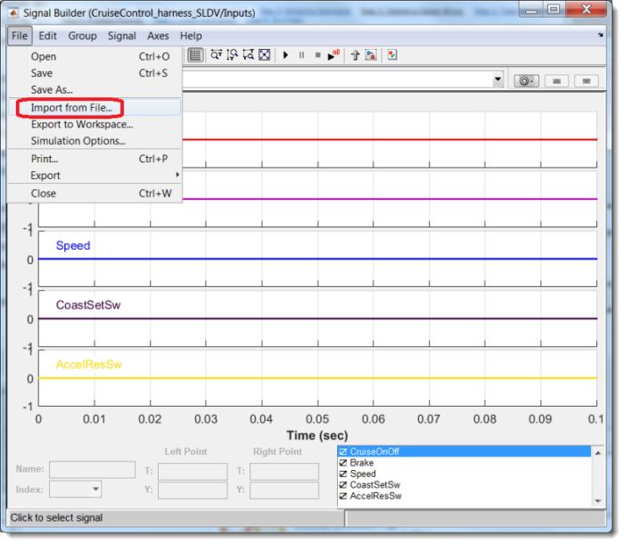
5. Under Select file to import, click Browse, navigate to the Test directory, select the CruiseControlTests_short.xlsx file. Import File dialog will now have the Files to Import textbox populated.
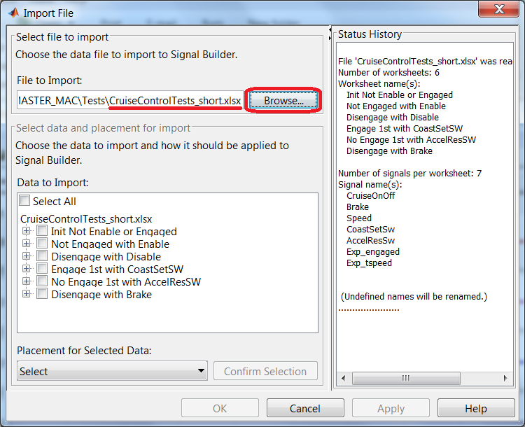
6. After the data has been imported, check the Select All, Replace existing dataset, and Confirm Selection options, and then Apply.
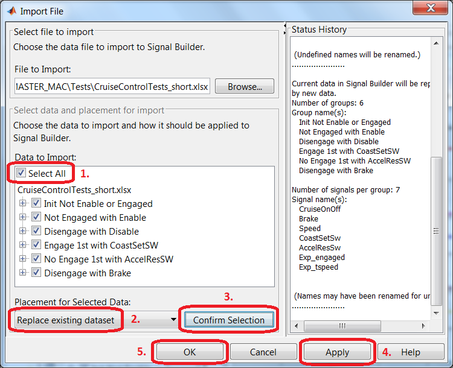
7. Select the No, import without saving option. The Signal Builder block should now have all the Excel data.
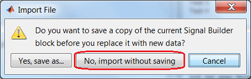
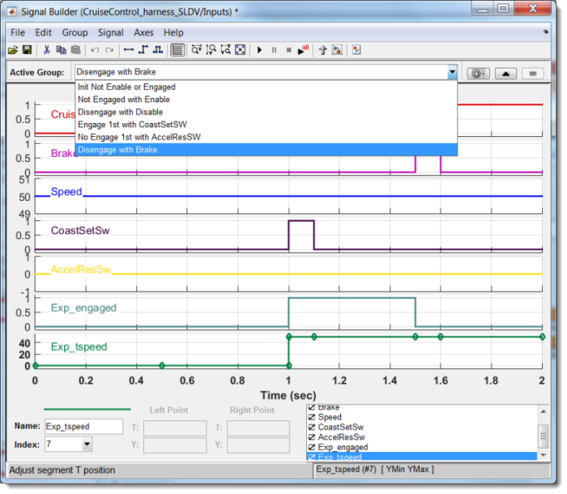
Completing the Test Harness Model
Please note that during the import, the signal lines between the Signal Builder block and the Test Unit have been disconnected. We now need to setup the harness model for easily logging and inspecting of the simulation results. Please do the following:
1. Reconnect lines from "Signal Builder" to the "Input Conversion Subsystem" block.
2. Add and connect conversion blocks, "boolean" to the engaged and "uint8" to the tspeed Signal Builder outputs.
3. Add terminators and connect to the signal conversion blocks.
4. Label the signals to be Exp_engaged and Exp_tspeed.
You should now have a harness model that looks like the picture below:
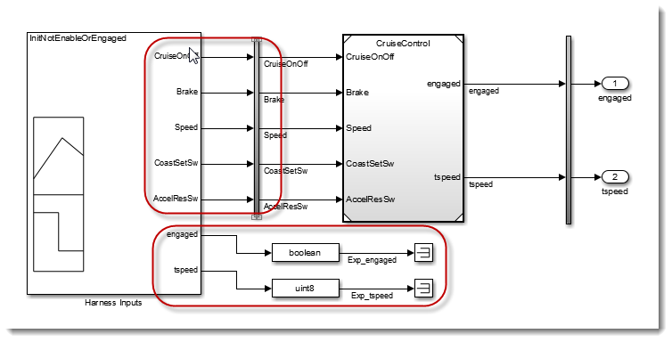
To log the signals for easy inspection, please do the following:
5. Select the 4 named signals: engaged, tspeed, Exp_engaged, and Exp_tspeed.
6. With the 4 signals selected, click on the arrow next to the Siimulation Data Inspector button and select Log Selected Signals to Workspace (see picture below).
This will make small antennas appear on the signal lines, indicating that these signals will be logged during simulation.
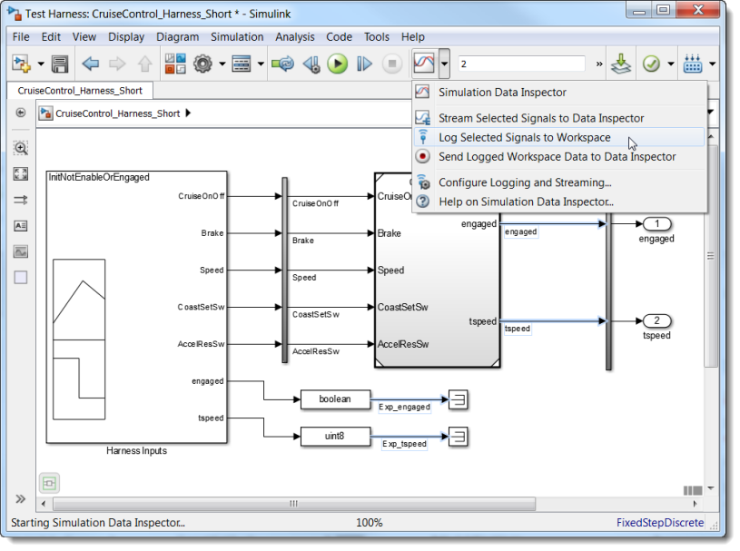
To analyze the logged output signals, we will send the logged signals to the Simulation Data Inspector tool. Do the following:
7. Click on the arrow next to the Simulation Data Inspector button and select Send Logged Workspace Data to Data Inspector (see picture below).
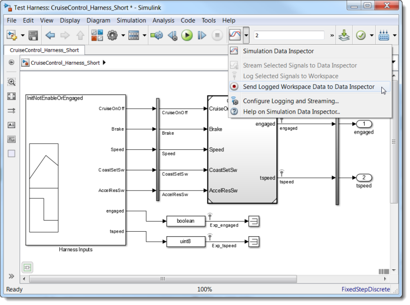
The last item needed is set or check the data logging has been configured
8. Open the "Model Configuration". Navigate to "Data Import/Export" and check "Signal logging".
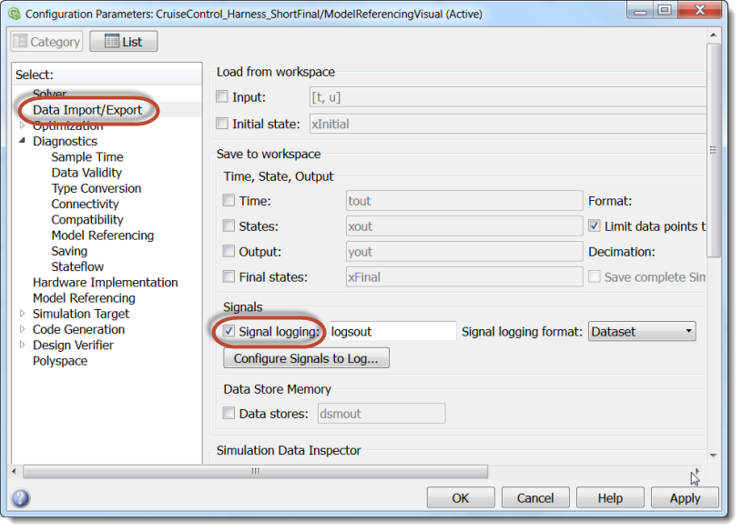
You should now have a model that looks like this:
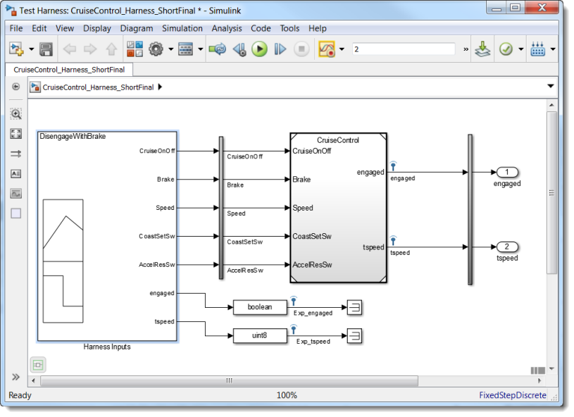
We can now run the simulation and inspect the results.
Note 1: The steps above can be scripted.
Note 2: If you haven't been able to complete the setup above you can open a pre-configured model by clicking here.
Executing the Functional Tests and Analyzing the Results
Simulation Data Inspector (SDI) allows the user to:
- View logged data
- Visually compare different signals within the same simulation
- Compare the same signals between different simulations
- Compare different simulation runs, perfect for Software-In-the-Loop (SIL) and Processor-In-the-Loop (PIL) comparisons Generate HTML reports of comparison results
To run all (6) test cases and view the results in the Simulation Data Inspector, do the following:
1. Clear any runs in the Simulation Data Inspector - click here.
2. Open the Signal Builder block.
3. Click on the Run All button. This will run all (6) simulations in sequence.
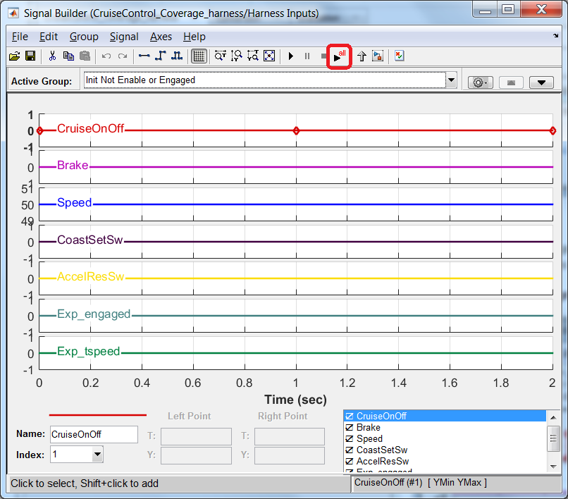
Once the first simulation is complete, the Simulation Data Inspector (SDI) will open, containing the logged data from the simulation. After each run has completed, its simulation data will be added to SDI. When all (6) runs have completed, try to do the following actions in SDI:
4. Plot individual signals.
5. Verify that the outputs match the expected outputs for a few of the 6 different runs (see picture below).
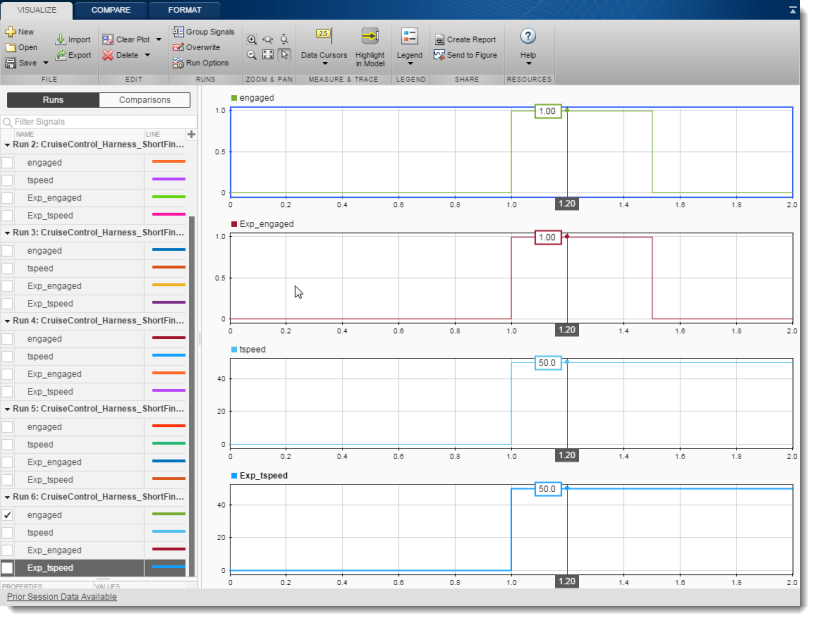
Now let's use the Simulation Data Inspector (SDI) built-in "Comparison" feature for signals.
6. Select the "Compare" tab in SDI and select the "Signals" option.
7. Right-click on the "Exp_tspeed" signal, select Compare Signals, Set as Baseline
8. Right-click on the "tspeed" signal, select Compare Signals, Set as Compare To
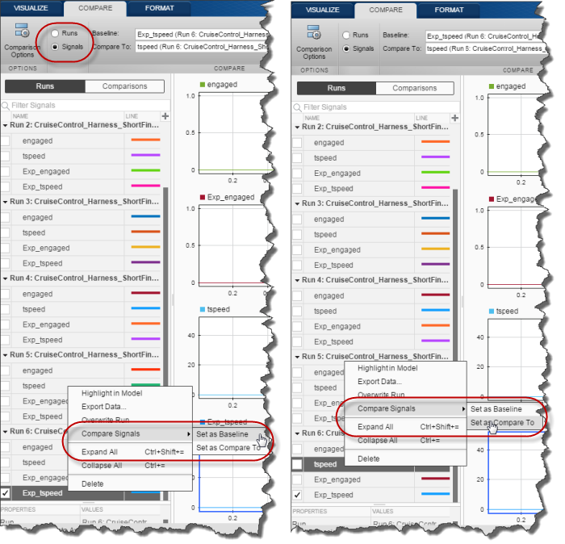
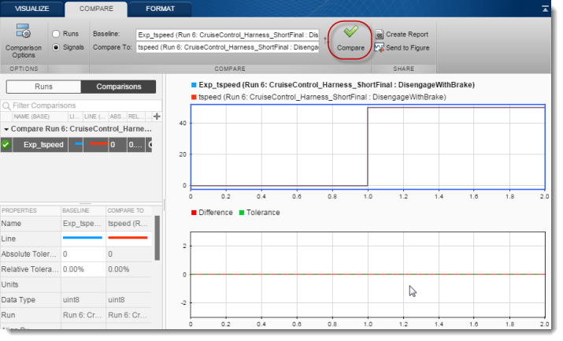
This way we can compare the Test Unit outputs to the expected outputs manually by plotting or use the "Comparison" feature. But isn't there a way to % automate this verification process. Yes, there is! In the next section look at a way to do this. In a later section we will use the more full featured test setup, execution, evaluation and reporting features provided by Simulink Test.
For more information on Simulation Data Inspector, please refer to the Help documentation.
Using SDI for Results Verification
We can use Compare Run and the report generation capability together with the Simulation Data Inspector (SDI) API commands to automatically perform and generate reports of the comparison between the model outputs and expected outputs. Please note that this method is not limited to model outputs. You can use it for any signal inside the Test Unit you want to compare to expected values.
Do the following:
1. Make sure you have data from the (6) test cases in Simulation Data Inspector.
2. Manually delete any comparisons in from the previous section in Simulation Data Inspector.
3. If you finished creating the harness, run the following command - or click here.
>> createFuncTestReport('CruiseControl_Harness_Short','CruiseControl');
4. If you loaded the pre-made harness, run the following command - or click here.
>> createFuncTestReport('CruiseControl_Harness_ShortFinal','CruiseControl');
This will generate comparison reports for the (6) test cases in Simulation Data Inspector (outputs vs. expected outputs).
Online Assessment with Model Verification Blocks
Another way to automatically verify the outputs to the expected outputs is to use the Model Verification blocks in Simulink (see picture below).
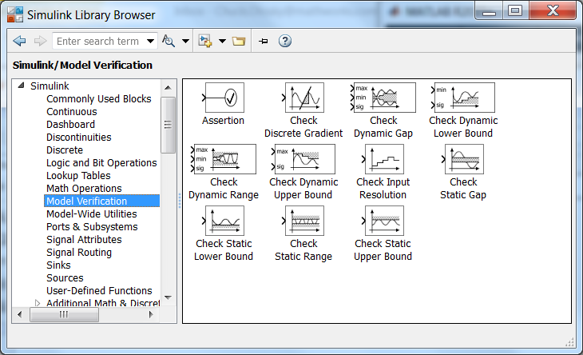
To show how the model verification blocks can be used, do the following:
1. Open a harness model where these blocks have already been incorporated - click here.
In the harness model you find a Verification subsystem where the comparison between the outputs and expected outputs are done during simulation using Assert blocks. If a mismatch is detected, the simulation will stop and tell you which block has asserted and when.
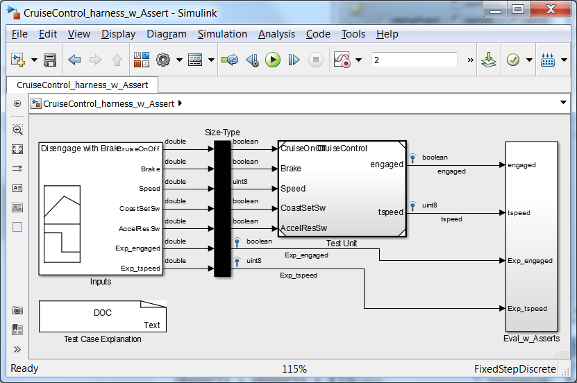
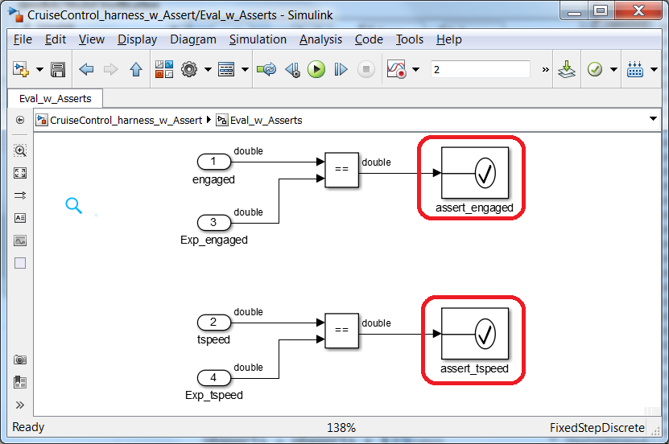
In the Signal Builder block the asserts in the model are visible on the right side of the dialog. Here you can enable and disable specific asserts (or other model verfication blocks) for the appropriate test cases.
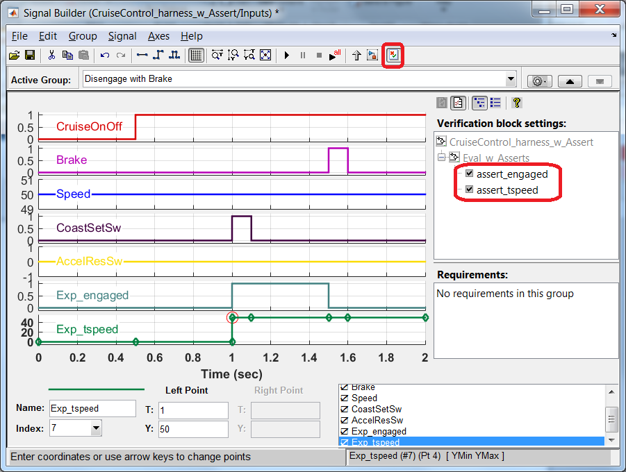
Let's execute a test using this verification approach.
2. Open Signal Builder and click the button Run All.
3. Verify that all test cases pass and no assert was triggered.
Let's now change the EXP_tspeed signal for the last test case, Disengage with Brake in Signal Builder such that it no longer matches the output tspeed.
4. Select the EXP_tspeed signal in Disengage with Brake so it becomes highlighted (a number of green circles will appear on the signal, indicating the data points making up the signal).
5. Select the data point shown in the picture below for a value of (T=1) and (Y=50). A red circle will appear around the data point when selected.
6. Enter a value of (40) for Y as shown in the picture below.
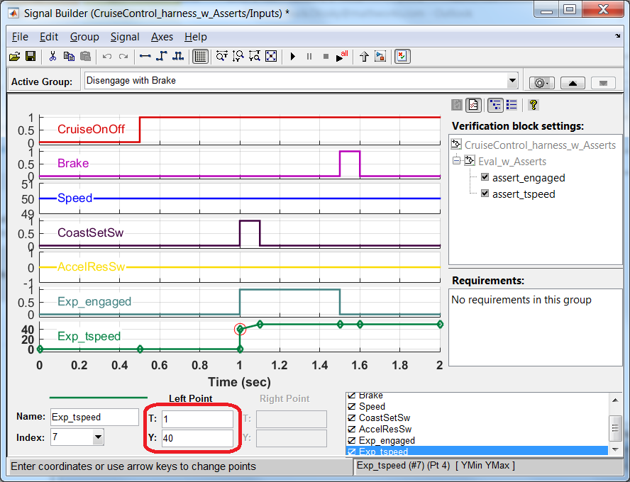
7. Click Run in Signal Builder.
The dialog window below will now appear indicating that an assert was detected for tspeed at time = 1 second and the simulation has stopped.
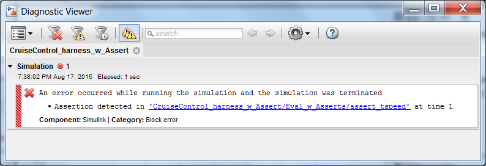
Assertions can be enabled and disabled for individual test cases. Let's disable the assert for the tspeed signal for Disengage with Brake in order to make the test run to completion. Disabling assertions could be used for test cases where a specific signal is not of interest in order to not have to create an expected output for that signal.
Make sure you have Disengage with Brake open in Signal Builder. On the right side of Signal Builder dialog you should see all the assertions in the model listed - assert_engaged and assert_tspeed - and whether they are active (= checked).
8. Uncheck the checkbox for the assert_tspeed. This will disable the assert which may require you to set "Block enable by group". (see picture below).
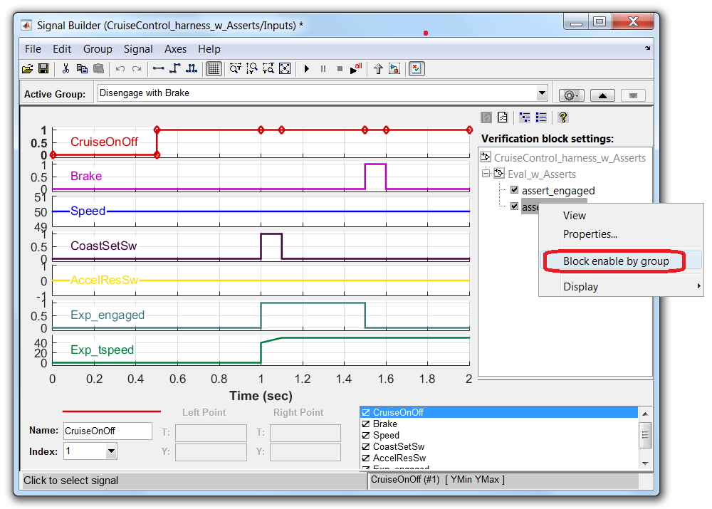
9. Click Run in Signal Builder.
The simulation for Disengage with Brake will now finish without triggering an assertion.
Enabling assertions on a per test case basis is one way make your test case creation and evaluation more efficient. It is typical for a unit test case to only be concerned with some (not all) of the outputs need to follow an expected output. This reduces the time to create a test case where you only need to excite a subset of the inputs and evaluate a subset of the outputs to verify the functional behavior as specified in the requirement.
Test Sequence Blocks for Inputs and Online Assessment
In this section we will use a test harness based on test sequence blocks for creating test inputs and determining assessments.
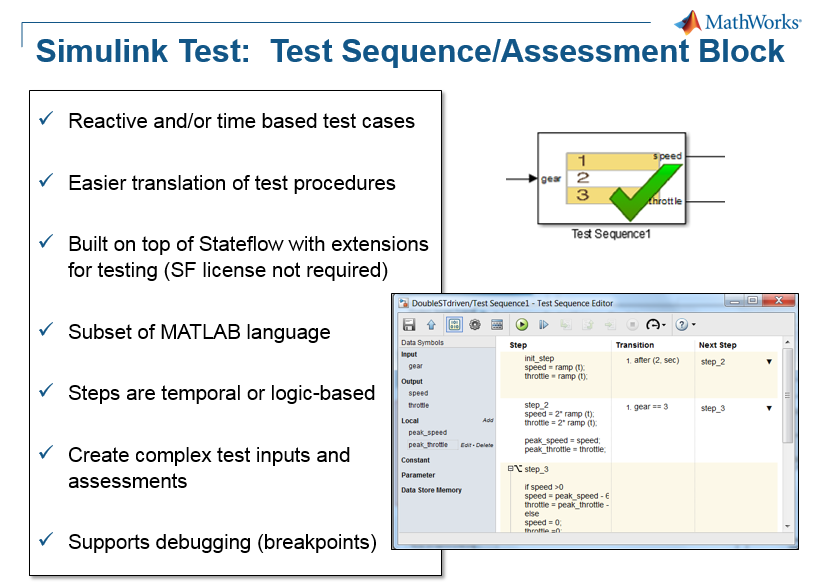
Using Test Sequence blocksk will result in a a more "natural language" approach to test case creation. To show this approach we create a test based on the "Disengage with Brake" test case. From the test plan below it is easy to interpret the intention of the "Disengage with Brake" test case:
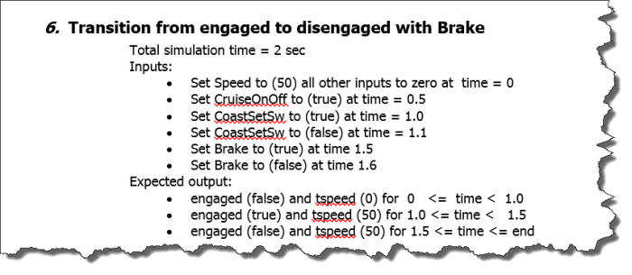
To show how the test sequence blocks can be used, do the following:
1. Open a harness model where these blocks have already been incorporated - click here.
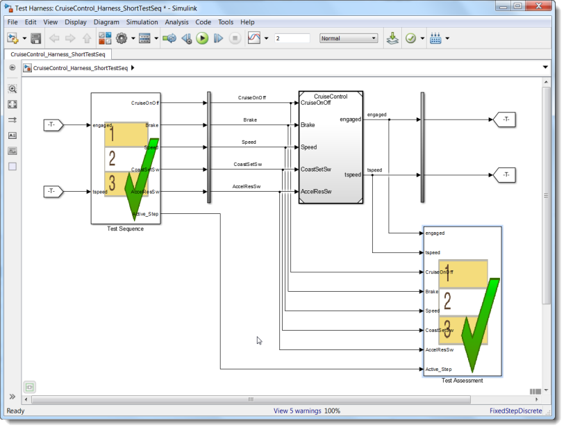
2. Open the "Test Sequence" input blocks to see how the test case inputs have been interpreted.
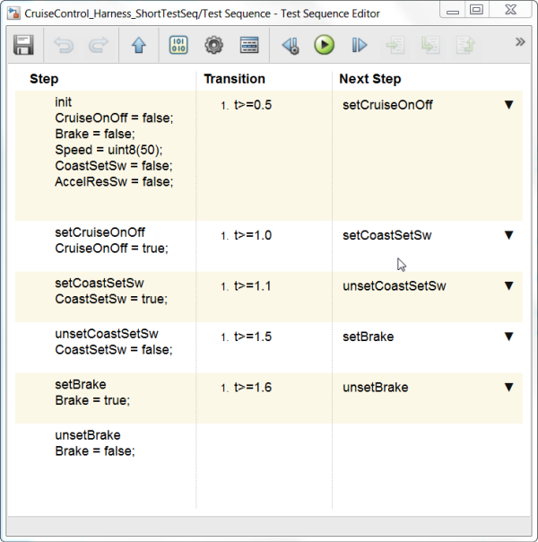
3. Open the "Test Assessment" blocks to see how the test case assessments have been interpreted.
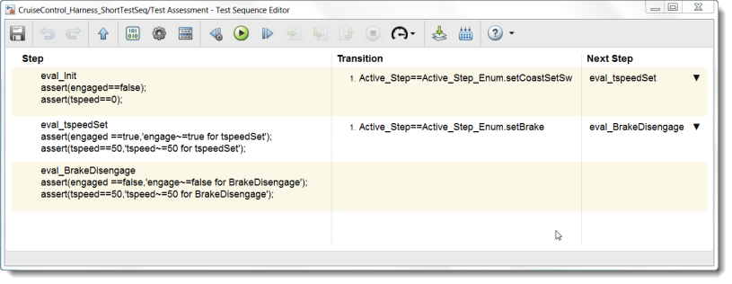
4. Open the Model Explorer to see how the "Active_Step" is signal is configured as an output from the "Test Sequence" inputs block to be used by the "Test Assessment" block.
The "Active_Step" is an enumeration signal that enumeration values for all the steps in input block. The "Active_Step" signal is then used by the "Test Assessment" to control the flow through the corresponding evaluation states.
5. Run the test to show the test passes.
6. Modify the "Test Assessment" block to demonstrate a failure similar to the previous example.
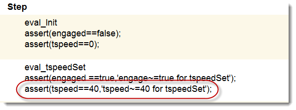
The failure is displayed in the Diagnositic Viewer and in the "Test Assessment" block.
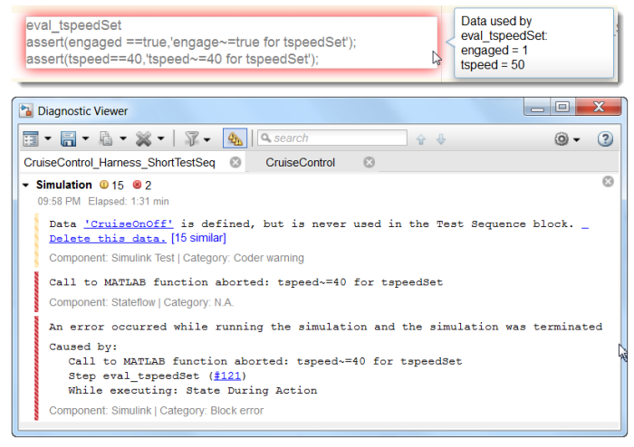
Simulink Test Manager Overview
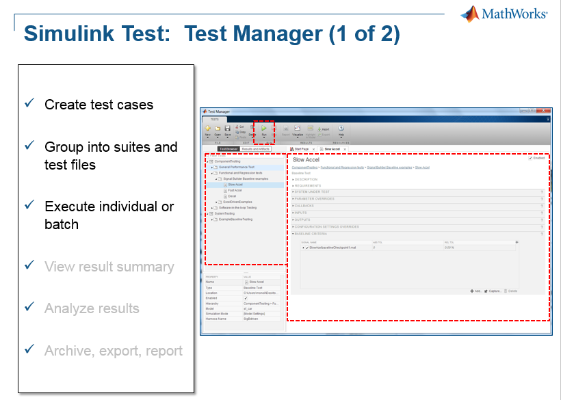
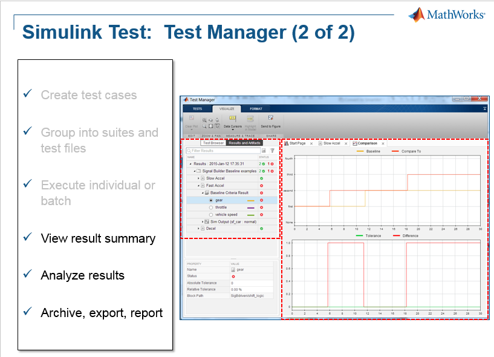
Importing a Test Harness into the Test Manager
We will now show how to automatically create test cases by importing an existing Simulink Test Harness. To show how the test harness import feature can be used, do the following:
1. Open a version of the CruiseControl.slx model with only one test harness - click here.
2. Open the Test Manager by selecting Analysis,*Test Manager...* from the harness model menu.
3. Create a "Test File from Model" by New, Test File, Test File from Model.
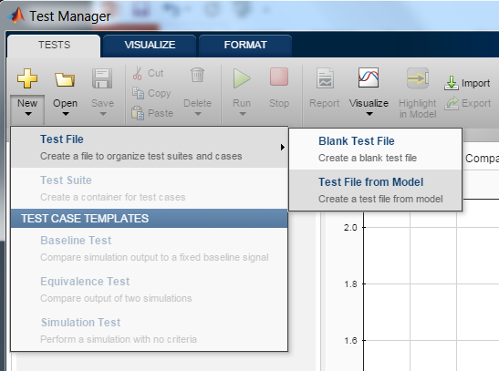
4. Select "Use Current Model". Enter "testSim" for the file in "Location". And select "Test type" as "Simulation".
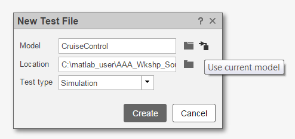
The test cases are automatically created for each Signal Builder test case in the "CruiseControl_Harness_ShortAssert" harness.
5. To run all the test cases, select the "CruiseControl_Harness_ShortAssert" test suite and press "Run".
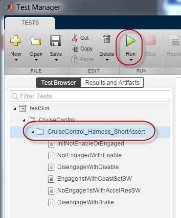
The test results show all test cases passing. The data may be analyzed with embedded Simulation Data Inspector.
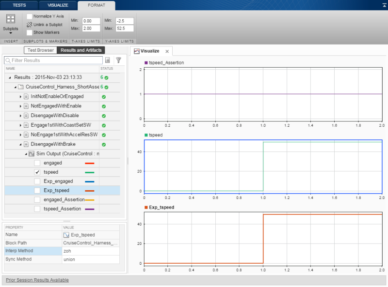
6.In the Signal Builder block of the harness, change the expected tspeed for the "DisengageWithBrake" to (40) at time (1) to fail the test as we did in the previous examples.
7. Re-run the "DisengageWithBrake" to see the failure displayed in the results.
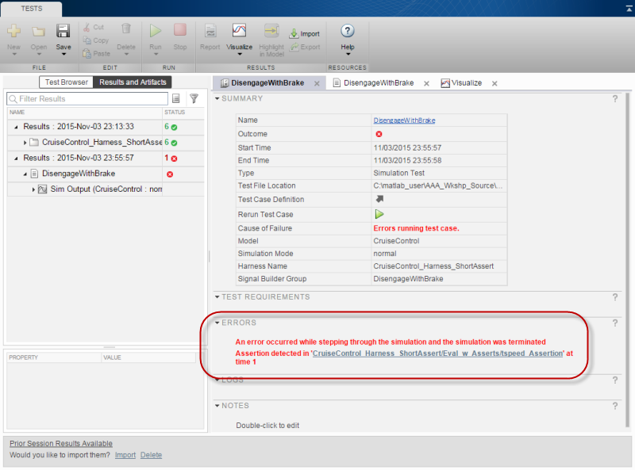
Notice the failure indicated in the results. Also the "assert" block is terminating the simulation. When this happens there are no simulation results to analyze.
Using a Baseline for Test Case Asssessment
In this step we will use a "baseline" type test case to indicate a failure and produce complete simulation results for analysis. To show how a "baseline" test case suite can be created and used, do the following:
For a baseline test, the baseline data is used to determine the assessment. So for this test we will use the assert signal but we will no longer need the assert "stop simulation" behavior to determine the assessment.
1. For each "assert" block in the harness, uncheck "Stop simulation when assertion fails".
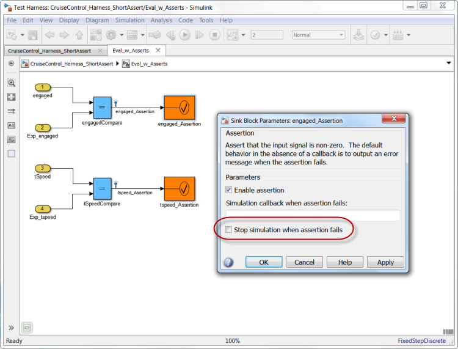
2. Create a "Test File from Model" by New, Test File, Test File from Model.
3. Select "Use Current Model". Enter "testBaseline" for the file in "Location". And select "Test type" as "Baseline".
The test cases are automatically created for each Signal Builder test case in the "CruiseControl_Harness_ShortAssert" harness.
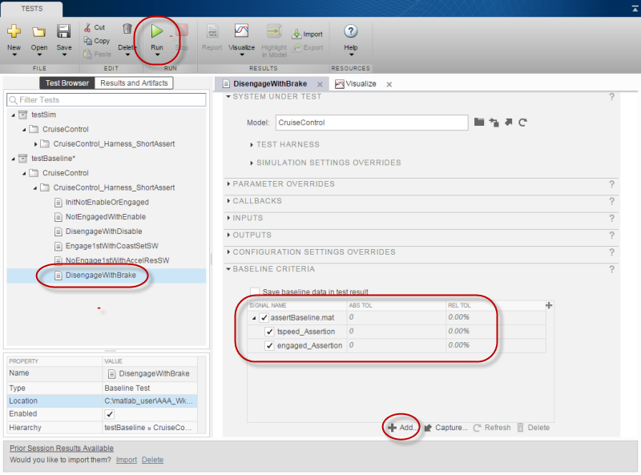
4. For a "baseline" test, the "Baseline Criteria" needs to be entered. Select "Add", and select "assertBaseline.mat" for the criteria.
In the baseline criteria data, "tspeed_Assertion" and "engaged_Assertion" signals are always (1) or true for all the time points.
5. Select the "DisengageWithBrake" test case to show the test failure but it produces results for analysis.
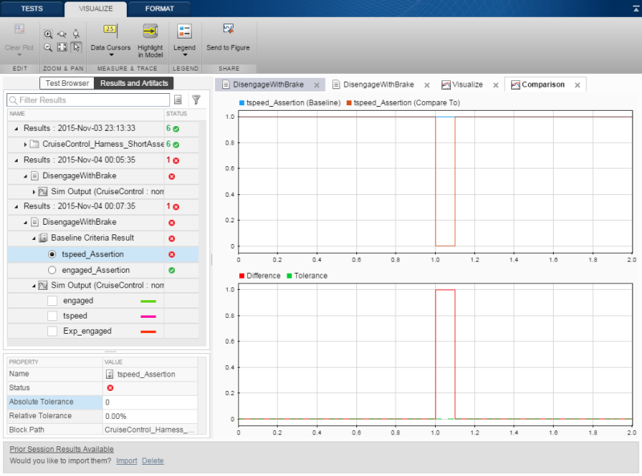
Introduction to the Model Coverage Concept
In this section we will focus on measuring structural model coverage, a measurement of how much of the model has been exercised by your test cases. Coverage is an important aspect of Verification and Validation. It can help you in several different ways:
- Determine dead logic "branches".
- Determine if sufficient test vectors have been created
- Determine if the existing requirements are sufficient
The types of structural model coverage that are supported are:
- Decision
- Condition
- Modified Condition/Decision Coverage (MC/DC)
An explaination of the above coverage metrics is shown for a simple model in the picture below:
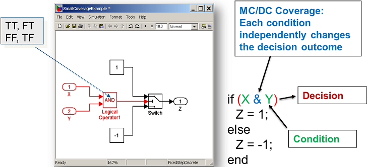
Please note that Simulink Verification and Validation tool offers more model coverage analysis capability than the ones listed above. It can also collect coverage on:
- Signal Range
- Lookup Table
- Signal Size
- Custom objectives using Simulink Design Verifier blocks
Collecting Model Coverage From Functional Test Cases
Besides verifying that the unit under test behaves as expected w.r.t. functional requirements, it's also important to make sure that the test vectors have exercised the model to a high degree, i.e. that we have a high model coverage. For this example we will use the same model but with a more complete set of input test vectors based on the requirements.
To enable Simulink to measure the model coverage for a simulation, do the following:
1. Open the CruiseControl.slx model with the coverage test harness - click here.
2. Next we will configure the harness to collect model coverage during the test execution. Go to Analysis, Coverage, and select Settings.
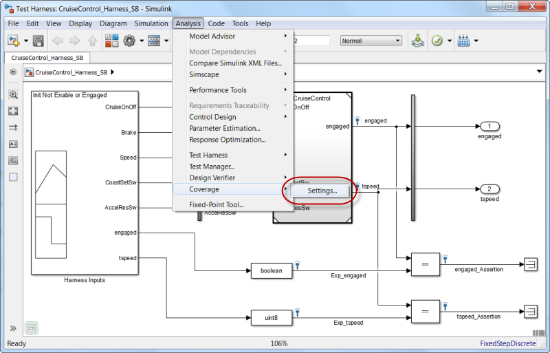
3. Check the checkboxes as shown in the picture below for the tabs: Coverage, Results and Reporting.
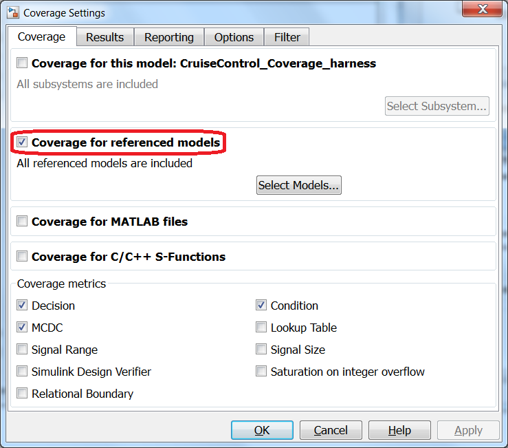
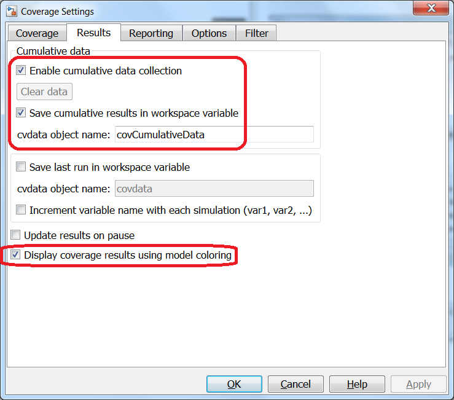
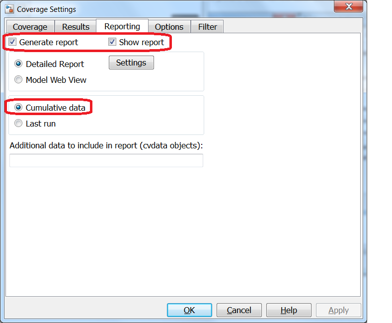
4. Click OK.
We will now measure coverage for all referenced models (in our case the Test Unit - CruiseControl). We will also display the model coverage results using model coloring as well as generating an HTML report with detailed results.
But first we will manually create a test case in the Test Manager and use a new feature call "Iterations".
5. To enable the "Iterations" feature, run the following command - or click here.
>> stm.internal.util.enableFeature('iterationsFeature', 1)
You may have to run it twice, until the return value is (1).
6. Open the Test Manager, navigate to the "TESTS" tab and select New, Test File, Blank Test File. Enter "testCoverage" for the test file name.
7. Navigate to the "New Test Case 1", for the "Model", select the "Use Current Model Icon".
8. For the "Harness", select "CruiseControl_Harness_SB" from the dropdown.
9. In the "INPUTS" section, check "Signal Builder Group" and select "Refresh signal builder group list, performs update diagram".
10. In the "BASELINE CRITERIA" section, select "+Add...", and select the "assertBaseline.mat" for the criteria.
11. In the "ITERATIONS" section, select "Auto Generate" in "TABLE ITERATIONS" subsection.
12. In the "Iterations Templates" dialog, select "Signal Builder Group".
13. Highlight "New Test Case 1", and select the "Run" icon on the toolstrip as before.
After all (14) runs have been completed, the model coverage report will show up:
The summary section contains all the coverage metrics, as well as how each subsystem contributes to the overall coverage calculation.
Using the Model Coverage Results
The Model Coverage report contains detailed information about what parts of the model are uncovered by the functional test cases. The user can use this information to either:
- Develop more test vectors for the missing coverage.
- Check to see if there are missing requirements.
- Identify implementation design issues.
The coverage report provides a summary and detailed analysis of the coverage collected for the Cruise Control model. The 92% overall decision coverage as shown in the previous section is relatively high for a first attempt. The coverage goal may be as low 80% for a non-safety related applications but often we will attempt to get 100%, particularly if it is safety related. The coverage report detail shown below provides insight into the completeness of our test cases. Specifically the exit transition is never occurring for the vehicle speed limit check. Likely this is due to either a missing requirement or test case. When we check the requirements we realize that we need to add a few test cases to more completely cover this functional requirement.
Alternatively, the model has been color coded such that the user can get a quick over view of what and how much is missing. The same missing information is shown from the context window by selecting the same transition. The model coloring shows that we are never exiting from a "hold" button input for the AccelResSw or increase speed button. Based on this we found that we did not have complete requirements with regard to the "hold" function.
We created (5) new test cases based on examining the model coverage report and the model coloring of the coverage results.
1. Add these test cases to the Signal Builder harness. Use the "Import from File..." feature to add the test cases from "CruiseControlTestsTopItOff.xlsx".
2. For "Placement of Selected Data:", select "Append groups".
3. Return to the Test Manager. Refresh the "Signal Builder Group" to bring in the additional test cases.
4. Delete all iterations and "Auto Generate" new iterations from the "Signal Builder Group". There should be (19) iterations.
5. Highlight "New Test Case 1", and select the "Run" icon on the toolstrip as before.
In the Test Manager, the last test case did not pass.
The assertion blocks are checking that the implementation outputs engage and tspeed match the expected results. Now that we have a greater number of test cases to cover more of the implementation, we find a design issue. We can also look at the coverage results on the model that may help us locate the source of the design issue.
We need to change the comparison operator for the (2) exit conditions from ">" to ">=" and "<" to "<=".
6. Fix the issue for both exit conditions, or load the fixed version of the CruiseControl - click here
7. Highlight "New Test Case 1", and select the "Run" icon on the toolstrip as before.
With the design fix and the additional test cases we now have 100% coverage and no assertion fail messages to the command window.
This shows a typical workflow where we iterated by analyzing the coverage results, add new functional est cases and eventually get to 100% coverage. Also realize that we know 100% coverage is possible because we fixed the error based on the order of integer calculations using Design Error Detection from previous section.
But, what if our logic is very complicated, and even after several iterations, we were only able to get to, say, 95% coverage? Is there anything we can do to speed up this iterative process? Yes, with Simulink Design Verifier, the user can also ask the tool to ignore the coverage already achieved by the functional test vectors and generate the missing test cases to achieve 100% coverage. The user can then e.g. use these test cases as "hints" to reverse engineer functional tests from them. This will be covered in the step Test Generation.
Summary
In this method we have shown a function verfication workflow:
- Creating an "internal" test harness within the implementation model
- Importing test cases from a spreadsheet into the model
- Adding a subsystem to do automatically check the outputs
- Analyzing the results with the built-in Simulation Data Inspector (SDI)
- Using test sequence blocks for creating a "natural language" test case
- Automating the execution of test case with the test Manager
- Measuring the completeness of the test cases with model coverage
- Using coverage and output comparisons to isolate and debug issues
We were again able to find and fix these issues early in our development process, increasing confidence in our design. We will continue to answer more of the questions in the next steps with our structured and formal testing framework for securing the quality, robustness and safety of our cruise controller.
When you are finished, close all models and files - click here.
Go to Step 5: Test Case Generation - click here.